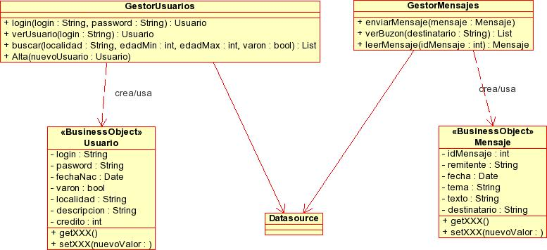

Ejercicio de la charla 1: Introducción a los patrones de diseño
Descripción de la aplicación
Tenemos una aplicación web con JavaEE denominada AmigosJavaEE en la que cada usuario mantiene una página personal con datos, descripción, aficiones,etc. Una vez hecho login, un usuario puede ver las páginas de otros, buscar usuarios por diferentes criterios y enviarles mensajes, además de ver los que otros usuarios le han enviado.
En resumen, los casos de uso son los siguientes:
- Un usuario hace login en la aplicación
- Un usuario ve la página personal de otro
- Un usuario ve los mensajes de su buzón (inicialmente solo fecha, remitente y tema)
- Un usuario lee un mensaje
- Un usuario envía un mensaje a otro
- Un usuario busca otros usuarios especificando sexo, localidad y edades máxima y mínima
Refactorización con patrones de diseño
La siguiente figura muestra un diagrama de clases parcial de la aplicación, teniendo en cuenta solo las capas de negocio y acceso a datos.

En grupos de 2-3 personas, refactorizad la aplicación para que use patrones de diseño, generando un nuevo diagrama de clases. No es necesario usar todos los que se han visto en la charla, solo aquellos que sean necesarios justificando brevemente (2-3 líneas) su introducción.